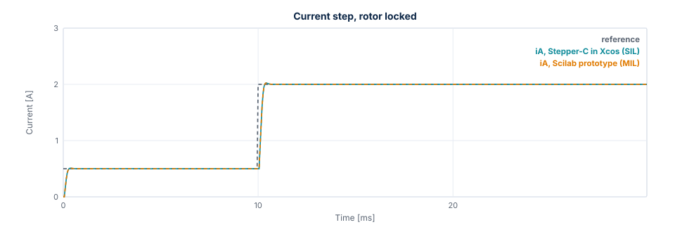
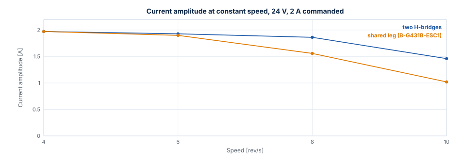
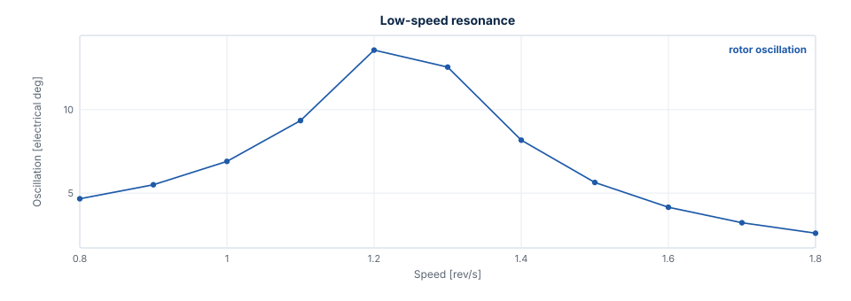
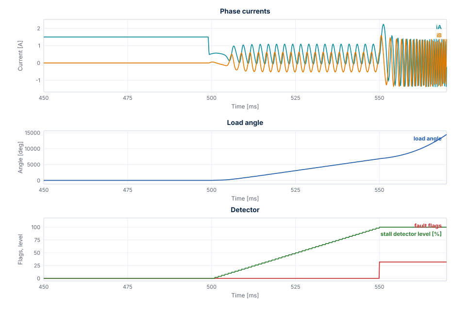

Measured Results¶
This chapter shows what the model says about the example: 17HS19-2004S1, 24 V, 2 A, 20 kHz, 1 kHz current loop bandwidth. "Measured" means measured on the model. These are simulation results, valid as far as the parameters are, and they have not been compared here with a real motor.
Current loop¶
A 0 → 2 A step on a locked rotor, in test T04, gives the same result on both topologies:
| Overshoot | Rise (90 %) | Settling (2 %) | Steady error |
|---|---|---|---|
| 1.12 % | 0.350 ms | 0.400 ms | 0.009 % |
The figure shows the first Lab scenario, a step from 0.5 to 2 A, with both controllers. The two curves lie on top of each other: they differ by at most 1.2 mA in this run, and the ADC step is 1.95 mA.

Voltage limit¶
The current amplitude falls with speed once the bridge reaches its voltage limit. The shared leg reaches it first, because its largest amplitude is \(V_{bus} / \sqrt{2}\).

| Speed | Two H-bridges | Shared leg (B-G431B-ESC1) |
|---|---|---|
| 4 rev/s | 1.97 A | 1.97 A |
| 6 rev/s | 1.93 A | 1.90 A |
| 8 rev/s | 1.86 A | 1.56 A |
| 10 rev/s | 1.46 A | 1.02 A |
Below the limit the amplitude drops slightly with speed, because the current loop lags the rotating reference.
Higher speeds are left out: from about 11 rev/s on the shared leg the operating point is a limit cycle (see below), so a mean amplitude depends on the time window it is taken over.
Resonance¶
Natural frequency. The rotor on the current vector oscillates at \(\sqrt{p K_t I / J} / 2\pi\), which is 253.8 Hz at 2 A without load. The loop gives 248.1 Hz (test T11).
Low-speed resonance. A detent torque excites it when \(4 p n\) equals the natural frequency, about 1.27 rev/s. With 0.02 N·m, which is an assumption and not a datasheet value, the rotor oscillation peaks at 1.2 rev/s, at 13.6 electrical degrees. Avoid running continuously around this speed, or add load inertia or damping.

Mid-band instability. Below the voltage limit the current loop damps the rotor. Once the bridge limits the voltage the oscillation grows. A higher bus voltage moves this up.
| Speed, shared leg, 24 V | Oscillation (electrical) | Voltage scale |
|---|---|---|
| 5 rev/s | 0.0° | 1.00 |
| 8 rev/s | 1.3° | 0.51 |
| 11 rev/s | 47.6°, a limit cycle | 0.30 |
Parameter uncertainty¶
With the gains for the nominal motor and a different plant (test T08):
| Plant | Overshoot | Settling (2 %) | Steady error |
|---|---|---|---|
| R ×0.9, L ×0.8 | 5.16 % | 0.450 ms | 0.060 % |
| R ×0.9, L ×1.2 | 2.15 % | 1.000 ms | 0.216 % |
| R ×1.3, L ×0.8 (hot winding) | 1.99 % | 1.600 ms | 0.344 % |
| R ×1.3, L ×1.2 | −0.06 % | 0.550 ms | 0.060 % |
A ramp to 4 rev/s stays synchronous with R ×1.3, L ×0.8, J ×5 and 0.15 N·m of load: the load angle reaches 46.3°.
Power stage¶
| Result | Value | Test |
|---|---|---|
| Ideal switching stage against the averaged model | At most 0.0113 mA | T10 |
| Ripple at 2 A, locked phase | 23.11 mA p-p, equal to the formula | T10 |
| Dead time voltage error at 133 ns | 0.135 V per phase, 0.07 mV from the formula | T10 |
| Peak current at 4 rev/s with dead time | 2.027 A | T10 |
| Commanded voltage against the switching stage, 4 rev/s, ideal legs | 118 mV | S05 |
| The same with the ngspice leg error table | 19 mV, amplitude 1.9702 A against 1.9701 A | S05 |
Stall detection¶
Configuration: ctrl_default() with stall_time_ms = 50. Pull-out means a load angle beyond 90°. Steps lost
is the difference between commanded and rotor position at the fault. The values are from the prototype and
the C library, on the averaged stage with the ngspice leg error and on the switching stage. Where they
differ, the table gives a range.
The figure shows Lab scenario 8: the hold current starts at 500 ms, the rotor slips under 0.12 N·m, the detector level rises to 100 %, and the fault switches the outputs off at 550.0 ms.

| Must trip | Fault | Time | After the pull-out | Full steps lost |
|---|---|---|---|---|
| 0.12 N·m, run 1.5 A, hold 0.5 A after 500 ms | Stall | 550.0 ms | 48.1 ms | 76.4 to 76.7 |
| Blocked rotor, run 1 rev/s from rest | Stall | 60.0 ms | 45.9 ms | 10.0 |
| 0.5 N·m load step at 1 rev/s | Overcurrent and stall | 154.9 ms | 3.7 ms | 13.4 |
| Overload at start: 0.5 N·m, run 1 rev/s | Overcurrent and stall | 39.5 to 40.3 ms | 38 to 39 ms | 1298 to 1354 |
| Heavy axis, J ×100, 0.5 N·m at 1 rev/s | Stall | 212.0 ms | 57.6 ms | 36.1 |
| Heavy axis, J ×20, 0.5 N·m at 3 rev/s | Stall | 316.0 ms | 61.1 ms | 162.9 |
| Must not trip | Largest detector level |
|---|---|
| Enable, run → hold 2 → 1 A, plant R +30 %, L −20 % | 52 to 54 % |
| Enable, run → hold 1.5 → 0.5 A with 0.07 N·m | 6 % |
| 0.30 N·m at ±1 and ±3 rev/s, plant R +30 %, L −20 % | 18 % |
| 4 rev/s, plant R +30 %, L −20 %, J ×5, 0.15 N·m | 26 % |
| Move of 6400 microsteps; reversal ±4 rev/s; 8 rev/s on both topologies | 0 % |
| Detent 0.02 N·m, 0.8 to 1.8 rev/s | 0 % |
| Mid-band 5, 8 and 11 rev/s, load angle up to 107°, no step lost | 0 % |
| 8 rev/s at 18 V, 9 rev/s at 20 V | 0 % |
| 11 rev/s at 24 V, plant L +20 %, load angle up to 149°, no step lost | 2 % |
The verdict asks for the stall flag in the first fault, also together with the overcurrent flag: a bare
rotor torn away by a large load reaches the overcurrent trip before stall_time_ms.
Agreement. The run in Xcos equals the prototype: the same fault within one slow period, and currents within 5 mA while the rotor is synchronous. After a pull-out the free slip amplifies the ADC quantization, and the 11 rev/s limit cycle grows from it, so those cases are compared by their verdict only.
After a fault. The outputs are off, which in the Xcos plant means 0 V on the phases, and the load torque stays as an input. A constant load then keeps accelerating the free rotor without limit, and the simulated currents and speed reach values that mean nothing. Read a result up to the fault.
Limits of the detector:
- A rotor that stops while the command is below
stall_speedis not seen. A rotor blocked at 0.4 rev/s gives no fault and a detector level of 0 % in 0.5 s, while blocked at 1 rev/s it trips at 60.0 ms. - A load angle swinging repeatedly beyond about 120° near the voltage limit is reported before a full step is lost. At 11 rev/s and 20 V the fault comes at 250.0 ms, with the rotor 0.83 full steps from the command.
Where these numbers come from¶
Each comes from a line of the test log of the final full run, or from the data of a figure, which
tools/docs/export_figures.sce writes with the setups of the tests. Run the tests or the export to measure
them again; Verification shows how.